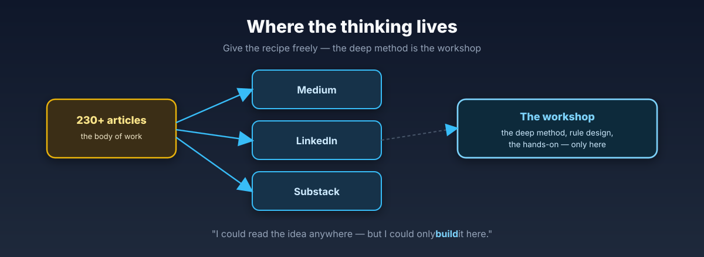

Articles
The thinking behind the approach lives where you already read — Medium, Substack, LinkedIn. The deep method, the rule design, the hands-on — that's the workshop.

What I write about
Structure + Data + AI + Rules → Intelligence. Why a data warehouse and a second brain are the same architecture — and why rules are the missing word in "data + AI".
AI that checks its own work — and improves the checks. Data quality, applied to AI output.
When structure carries the context, the meeting shrinks to judgement. A new way of working for data teams.
Being in control of your data, your AI, and your processes — and keeping that state. Learned at the banks.
Where to read
Placeholder links — swap in the real Medium/Substack/LinkedIn URLs.
Recent posts
They fail because we lose control over what actually changed. After the first batch looks fine, the questions start: did the logic stay the same? Which downstream models are affected? Bug or intended change? Text diffs and Slack don't scale — treat it as a migration control problem.
A team asked AI to refactor an integration model. It removed a "redundant" join, all tests passed — and two weeks later regulatory reporting broke. That join wasn't there for data. It was there for lineage. The architecture you can't see is the one AI quietly deletes.
Teams take Data Vault too literally. Hubs, Links, Satellites start as a flexible architecture and harden into a rigid one, until the framework becomes the goal. The real value was never the table patterns — it's the principles behind them.
Not because of complex logic — because we compare only the final result. Old pipeline, new pipeline, 47 rows differ, and now you're staring at 15 CTEs with COUNT(*) checks and Excel exports. There's a better way to find the root cause.
We don't need more layers in the data stack. We need smarter collaboration. In most teams it starts too late — by the time the dashboards appear, the logic is locked in and fixing a misunderstanding means rebuilding pipelines.
Summaries rewritten in my own words; the full posts (and the conversation) live on LinkedIn.
You can read why structure beats magic anywhere. You can only build it for your data in a workshop.
See the workshops